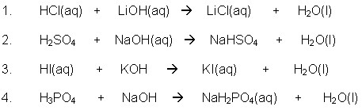
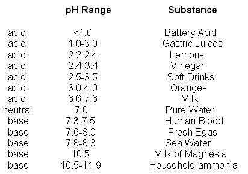
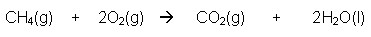
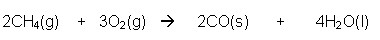

Unit 2: Chemical Reactions
Activity 3: Types of Chemical Reactions
Content
Double Displacement Reactions
Did you know?

|
When two clear, colourless liquids mix, a yellow precipitate will form. It is not magic; just watch the video below. |
|---|
|
|
Watch the clip entitled, Lead Iodide Tornado but please be aware, that, depending on your Internet connection speed, all clips on this page may take a few minutes to download. You can always continue reading the remainder of this page while you wait. |
|---|
The General Formula for a Double Displacement Reaction is
AB + CD  A
D + CB
A
D + CB
The first part of the compound is the cation and the second part of the compound is the anion. Remember: The cations and anions keep their respective roles throughout the reaction. Here are some examples:
AgNO3 + NaCl  NaNO3 + AgCl
NaNO3 + AgCl
KBr + NaCl  NaBr + KCl
NaBr + KCl
Neutralization Reactions
Another unique type of reaction is the neutralization reaction between an acid and a base. Specifically, it is a double displacement reaction. The acid reacts with the base to produce a chemical salt and water.
 Neutralization Reactions
Neutralization Reactions
Examine the following examples and pay attention to the products in the following exercise:

To begin with, pH is a measurement of the acidity or alkalinity of a substance and the range is from 0 to 14. A pH range between 0 and 7 indicates an acid and a pH range between 7 and 14 indicates a basic nature. A pH of 7 indicates a neutral substance.
There are many common everyday substances that are either acidic or basic. Here is a small snapshot of some substances and their pH ranges:

At a macroscopic level, the effects of the neutralization reaction are observed by using acid-base indicators. The chemical's change in colour, depending on the pH level of the solution, shows us whether something is acidic or basic (alkaline). There are a variety of acid-base indicators to show the pH range. Here are two indicators’ respective colours and pH ranges:
Indicator pH Range Colour Changes
Phenolphthalein 8.3-10.0 Colourless to dark pink
Bromthymol blue 6.0-7.6 Yellow to blue
Combustion of Hydrocarbons
Combustion is the rapid chemical reaction between oxygen and another substance. In this particular case, hydrocarbons are the group of compounds that are reacting with oxygen. Incomplete combustion is a unique situation whereby there is a limited supply of oxygen for completing combusting the hydrocarbons.
Hydrocarbons, as the term suggests, are compounds consisting of only hydrogen atoms and carbon atom and the products of complete combustion are always carbon dioxide and water. Incomplete combustion of hydrocarbons yields carbon monoxide and water.
Complete Combustion

|
|
Watch the video clip entitled, Gummi Bear Sacrifice for another example of combustion, but please be aware that, depending on your Internet connection speed, all clips on this page may take a few minutes to download. You can always continue reading the remainder of this page while you wait. |
|---|
Incomplete Combustion

 Review Questions
Review Questions
 Answer
Answer
 Resources
Resources
This is a disclaimer. External Resources will open in a new window. Not responsible for external content.
Unless otherwise indicated, all images in this Activity are from the public domain or are © clipart.com or Microsoft clipart and are used with permission.